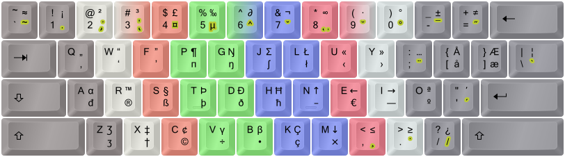
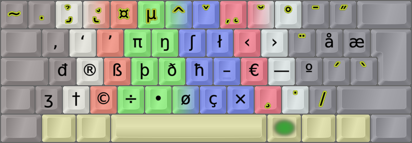

Symbolic Extend image:

My Extend mappings (Ext1 – Nav/Edit). Green, navigation; blue/circled, mousing; orange, multimedia; gray, system/misc.
Colemak[edition DreymaR] is the name of the AltGr and dead key layers I've created for the Colemak layout. I've tried to add much functionality while keeping it intuitive. In particular, I want to be able to write different scripts and tech/maths symbols. Since the start, there's been some minor tweaks based on my experience and forum feedback, but it's been stable for a long time now.
Look inside my various layout files for comments and explanations, in addition to these main design goals:
See the Colemak[eD] page if you want to know more.

Colemak [edition DreymaR] uses different AltGr mappings from Shai's default Colemak.
Shown on an ANSI keyboard with dead key emphasis (golden) and "FingerShui" color-coded fingering.
Extend is like a special Shift key (usually the Caps key) that brings keys and functions close to the home position – as if you had magically extended your fingers.
This is My Favorite Keyboard Enhancement next to Colemak itself! The ability to navigate and edit from the home position and its immediate surroundings is extremely powerful. It's like having part of the power of advanced editors like Vim ready in all situations. Plus a fully functional multimedia keyboard without sacrificing compactness. And more, much more.
Really, I cannot stress enough Just How Powerful Extend Is once you understand its workings! It's miles ahead of most other "Fn key" layers, for several reasons including the home row modifiers which lead to an ocean of powerful chording possibilities. Most newcomers don't seem to get this at once, so I urge you to study the Extend Extra Extreme page for your own sake. I realize that it may seem like much to learn one more thing, but you will benefit a lot from it. Furthermore, Extend can be learnt gradually a few tricks at a time, and it's much easier to learn than a new keyboard layout.

A chart of my Extend mappings (Ext1 – Nav/Edit). Green, navigation; blue/circled, mousing; orange, multimedia; gray, system/misc.
Here's the same image with symbolic labels like I use in the EPKL program; for more info see the Extend page and my source files:
Symbolic Extend image:
My Extend mappings (Ext1 – Nav/Edit). Green, navigation; blue/circled, mousing; orange, multimedia; gray, system/misc.
The Linux/XKB and Windows/EPKL implementations are almost the same. EPKL couldn't yet support mapping to the shifted multimedia keys. Linux usually has poor support for mouse WheelLeft/Right scroll keys so the XKB mappings have a MouseKeys On/Off key on <LSGT> and a Compose/Multi key on Slash instead.
Holding down AltGr with the Extend modifier you get Extend2: A NumPad layer laid out pretty much like a standard one but with the top row moved around to fit existing keys:

Extend NumPad mappings (Ext2). Green, navigation; purple, NumPad; sepia, symbols; gray, system/misc.
Ideally you can map any modifier to be the Extend "Mod2"/"Mod3" which select between different Extend layers, and only need to hold the Extend key itself after choosing the layer. At the moment though, this works as it should with EPKL and TMK but not XKB.
There may be a need for navigating while entering numbers, but on the other hand KeyPad keys rarely use modifiers. Hence, I moved the nav block from its UNEI arrow cross to the WARS cross familiar to gamers. Number row keys 1-6 are mapped to their shifted symbols since these may be needed for numeric input, as are some other keys; the bracket keys cater for the parentheses in this layer which feels logical to me.
In the EPKL implementation for Windows there are four possible Extend layers. One has a set of kaomoji! ☆*:.｡. o(≧▽≦)o .｡.:*☆ Be advised though, that one-shot output may be better mapped to sequences like dead keys; see below.
Extend quick tips:
Dead keys are keys that don't produce direct output but instead modify the following key press. They are traditionally used for accents such as acute (´), grave (`) etc, but it's possible to do a lot more with them and they can actually produce any valid output on release. So in addition to pressing the acute dead key then a to produce á for instance, with my DK mappings you could also press a number key to produce a superscript number! Almost all my DKs have "bonuses" like that. See below for a few examples, but bear in mind that the images shown here may not be fully updated.
Some of the traditional dead keys are almost empty: The doubleacute one only caters for ő ű, and ring only caters for å ů ẘ ẙ. There's also a whole iota dead key that only concerns itself with Greek characters. I've stuffed good things into many of those cracks even if it's not an entirely logical thing to do since the name of the dead key wouldn't quite reflect these extra mappings. If you use up layout space on a dead key it really shouldn't sit there taking up room for the meager purpose of providing 2-3 glyphs! So suddenly, the doubleactute DK doubles as a Science/Math DK and the ring DK is the new home of several ring symbols and ligatures! ☺
Dead keys are a central element of many of my locale layout solutions for people who need accented characters. But the default Colemak[eD] layout has a lot of dead keys to play with, albeit hidden away a bit on the AltGr layer. So using Colemak[eD], anyone can type nearly any symbol they may need. Let me know if you're missing any important ones!
The Colemak[eD] AltGr layer on an Angle-ISO board. Note all the dead keys marked in pretty yellow.
There are currently 19 dead keys in my Colemak[eD] layout. The common accents are there, together with a currency dead key on AltGr+4 and a Greek phonetic dead key on AltGr+5. Furthermore, some sparsely populated accent keys have been enhanced with extra content, such as superscripts/subscripts on acute/grave, fractions and negations on stroke/bar and ring symbols on ringabove. The most extensively reworked key is the double-acute which used to have only Uu and Oo and now contains a fairly rich set of math/science symbols (think of the double acute as akin to the equals and prime signs)! You really have to see them to believe them – I'll showcase some below but you can see them all using EPKL (default Ctrl+Shift+1 for the help images):
01) Dot below
02) Hook, palatal hook
03) Horn, retroflex hook/tail
04) Currency:


05) Greek (phonetic):


06) Circumflex
07) Caron
08) Ogonek, comma below
09) Breve
10) Ring above, ring symbols, ligatures
11) Macron
12) Double-acute, math/science:


13) Umlaut/diaeresis
14) Tilde
15) Acute, superscripts


16) Grave, subscripts
17) Cedilla
18) Dot above
19) Stroke/bar, fractions


Note: Colemak[eD] dead keys are designed to interact in clever ways through chaining: The 'Ring (°)' DK then 'angle (∠)' will produce 'arced angle (∡)', the 'Tilde (~)' DK with 'equals (=)' will produce 'equal or approximately equal (≅)', the Stroke DK with many symbols will produce slashed symbols (e.g., from '=' you get '≠') etc. The sequence you press the dead keys in may matter: Usually, start with the modifier(s) (such as 'stroke' for "not") then the symbol-producing key (such as 'maths' and then '=' which will usually produce '≡' but now gives you '≢' instead). At the moment, the only documentation for all this cleverness is snoping around the PKL layout.ini files, but logic will take you far too.
A goodly way down on my TODO list, I've planned to make a set of IPA dead keys to allow people to write phonetics easily and quite intuitively. It'll still be a while before I get around to it I'm afraid... Contact me if you wish to help make it happen!
Modifiers like Shift, Control and Extend are chording modifiers: You hold them down while hitting the keys they modify, to access other layers. Dead keys and sticky/one-shot modifiers are sequencing or leader keys that modify following output. The Compose key is another sequencing key, that's pressed either before or after typing a sequence that you want translated into specific output.
As described in an interesting article by Xah Lee, chording isn't always the best answer. For one-shot output like a special symbol or a single command, key sequences are generally better. The Alt key in Windows for instance, lets you access menu items by tapping a letter sequence like {Alt,F,T} (File → Tab) to open a new tab, which is intuitive and easily learnt by looking at the menus the first few times. Another good example is the Compose method used in Linux that can be activated either by any desired key combination similar to Autocorrect, or by a designated sequencing key such as a dead key or the Compose key.
Even a "tap-dance" of several key strokes can be preferable to chording for many one-shot needs. Holding down keys is more tiring than tapping out a sequence, and the more contorted a chord gets the worse it will be. All tap-dances aren't created equal either, and I much prefer ones that use easily reachable keys and no same-finger bigrams. Tapping the same key several times is not the best of ideas.
Sequences can be more mnemonic than layers. Let's say I want to map the old English letter Hwair (a /ʍ/ sound like in the Scottish pronounciation of 'who') to my layout for occasional use. With layers I'd have to remember where I had put it and on which layer ... hmmm, tricky. Help images like in the EPKL program can be very helpful there for sure, but only to some extent. If, on the other hand, I implement it as a Compose sequence I could for instance just type 'hw' and hit a Compose key to get a 'ƕ'. That's much easier to remember, don't you think? But only practical if it's not used all the time. If I were writing a book about Old English, I'd have the letters Ƕƕ Ȣȣ Ȝȝ and Ƿƿ somewhere in a handy layer for sure, and from frequent use I'd quickly learn where I'd put them.
Sequences provide for near endless complexity, but chorded layers like Extend let you do many similar operations without trigging them separately each time. So for navigation/editing like selecting the previous word then moving it to the end of the paragraph or, say, for entering numbers, chorded (or modal) layers are perfect.
Dead keys, as described above, can be great for mapping one-shot output like special and accented letters and symbols, without holding a modifier like AltGr down. They're the shortest sequences, only using one leader key and one release key to produce output (e.g., the Acute DK ´ then A for 'á'). With a battery of DKs you can fit in a whole bunch of symbols on fairly intuitive mappings!
On the downside, DK layers like AltGr layers can easily get crowded if, there are many symbols based on the same letter, or you want to map symbols that aren't based on letters or numbers. And since you'll likely need many DKs you may have to hold a modifier to access the DK in the first place; all my ≈20 DKs require you to press AltGr first unless you're using a locale variant that has the most needed of them on base layers. Dead keys are compact, but not very flexible.
Compose is a wonderful method based on easy-to-remember sequences for one-shot output. Linux users may know and use it with sequences like Composee' producing the accented letter é ("e acute"), and Compose12 producing the symbol ½ ("one-half").
You can edit the tables and add pretty much anything though! In the EPKL program for Windows I've added a whole bunch of new sequences for boilerplate text or even emoji sequences such as 'noevil composing to '🙈 🙉 🙊'. You can even compose a sequence like U1f4aa to input any Unicode character if you know its code point! 💪
Compose key sequences are similar to dead keys, and in Linux/XKB the same method is used for both. Generally though, DKs are more compact (maybe only two key presses needed) but less flexible, while Compose sequences are very flexible but less compact.
Repeat is a very basic context-dependent key. It simply repeats your previous character – but that's actually really useful. A central principle for improved keyboard layouts is to keep same-finger bigram (SFB) frequency low. According to NotGate who inspired me to try out repeating, there are far more repeated letters than other SFBs in good layouts today: Analysis using an English text corpus shows a 2.5% repeating-letter bigram frequency in total, vs for instance the 1.7% SFB frequency of Colemak. You can actually benefit from a Repeat key whether your layout is optimized or not.
One problem is where to place your Repeat key. I've tried it in the old QWERTY B position, which is available using the ISO-Angle ergo mod. That position has the interesting feature of being useable for both index fingers, but I ended up preferring a thumb key on the non-spacing thumb and I'm loving it. See the Modifiers section for more info.
My Repeat implementation is only in EPKL for Windows yet, but it isn't hard to do it with TMK/QMK controller coding or simple AHK code – see the bottom of NotGate's ISRT page for examples.
Complete is a next-level context dependent key. It adds characters depending on what you just typed. Completion is closely related to Composing: The main difference is that instead of replacing a recognized sequence, you add to it. You could even have the same key be either a Complete or Compose key depending on what you just typed.
You could use Completion to avoid SFBs: On Colemak, S then Complete could become 'SC' and completing C could become 'CS'; U for 'UE', etc. Then, you could also Complete longer n-grams such as the common 'THE' on T, 'AND ' on A, 'ION' (or 'ING') on I, etc; these are less common than the most common bigrams but they give more "bang for the buck". What to use would depend on your keyboard layout.
The main issue with Completion, besides finding a good position for it, is that it's hard to learn for normal typing. I haven't tried it much, but remembering that 'SC' is S-then-Complete etc etc when typing fast is probably as much mental effort as learning a new layout. It's almost a baby step towards stenotyping, albeit without chording. While potentially fast and efficient, it is hard to learn and use.
Extend-tap is a neat way of supercharging your Extend key for both chording and sequencing in one key! The Extend key can be a multi-layer dual-function key that produces different one-shot (dead key) or chording (modifier) layers based on the shift state at the time of tapping or holding it down. This way it can be a gate to the best of both the chording and sequencing worlds. I call such a multi-mode modifier a Mother-of-DeadKeys (MoDK) Extend key. Sadly, this isn't available on all platforms.
CoDeKey is another supercharged key, only available in EPKL for Windows at the moment. This one is a Compose key if you've entered a recognized Compose sequence beforehand. If not, it becomes a dead key instead and waits for a release key press! I use it quite a lot these days, as a thumb key. With it, I can compose anything I like, but also type for instance Period-Space-Shift more easily as CoDeKey then a home-row key – with other home row keys for other punctuation. I think it's amazing!
This table holds some CoDeKey dead key mappings that I like a lot. Naturally, you're free to experiment and complement.
+===========+===========+========================+
| Cmk Key | QWE Key | Effect after CoDeKey |
+===========+===========+========================+
| N | J | ! → Space → Shift |
| E | K | , → Space |
| I | L | . → Space → Shift |
| O | ; | ? → Space → Shift |
| ; | P | : → Space |
| - | - | Space → - → Space |
| U | I | Space → ( |
| Y | O | ) → Space |
| Q | Q | Escape |
| D | C | Delete Previous Word |
| [ ] / | [ ] / | locale/custom glyphs |
+-----------+-----------+------------------------+